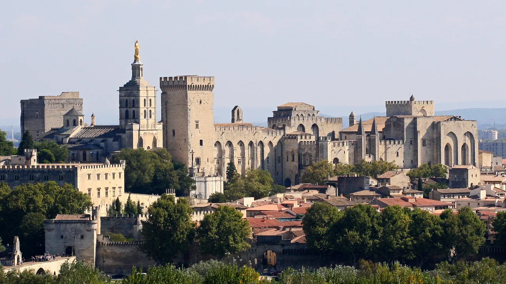
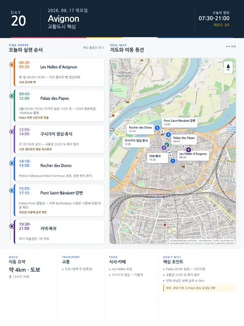

Day 20 · 9/17 목 · Avignon

오늘의 주요 장소

- 핵심 실행
- Palais·Rocher·Pont
- 권장 출발
- 08:30 Les Halles
- 완충
- Palais 입장 30분 전
- 예약
- 1건 — 완료 0 · 미확정 1 · 현황
시간표
| 시간 | 일정 | 실행 포인트 |
|---|---|---|
| 07:30–08:20 | 숙소 아침 또는 Jason 짧은 러닝 | 러닝은 성벽 남쪽 4–5km, 전날 피로가 있으면 생략 |
| 08:30–09:20 | Les Halles d’Avignon | 2026년 화–일 06:00–14:00. 치즈·올리브·빵·점심재료 구매 |
| 09:20–09:40 | Place Pie→Palais 이동 | Rue des Marchands·Place de l’Horloge를 통과 |
| 09:45–12:00 | Palais des Papes | 9월 공식 운영 09:00–19:00, 마지막 입장 1시간 전. 2026 새 방문해설·WebApp 활용 |
| 12:05–13:00 | Place du Palais·구시가지 점심 | 시장 샌드위치 또는 가벼운 비스트로. 긴 코스요리 금지 |
| 13:00–14:00 | 숙소 또는 그늘카페 휴식 | 교황궁 2시간 뒤 휴식 필수 |
| 14:10–15:00 | Rocher des Doms | Rhône·Villeneuve·Mont Ventoux 방향 조망, 정원 벤치 휴식 |
| 15:05–16:00 | Pont Saint-Bénézet | Palais+Pont 결합권이 합리적. 다리 위보다 강과 도시관계 이해가 핵심 |
| 16:10–17:15 | Rhône 강변 또는 Île de la Barthelasse 시점 | 무료 강나룻배 운항 여부·바람 확인. 운항 불확실하면 강변만 |
| 17:30–18:30 | 숙소 휴식·샤워 | 저녁 전 정식 휴식 |
| 19:30–21:00 | La Fourchette 또는 Le Goût du Jour | 9/18 은 금요일이라 둘 다 연다 — La Fourchette 는 토·일, Le Goût du Jour 는 화·수요일 휴무 (목~월 영업, 점심 12:00~13:30 / 저녁 19:00~21:30). 대체는 Cocottes |
피로도
3/5
이 날의 장소
일자별 시간표와 본문 표기에서 찾은 것이다. 하루의 전부가 아니라 장소 카드가 있는 것만 담는다.
이 날의 메모
Les Halles, 교황궁, 론강과 성벽도시
- 오늘의 결론: 예상 보행 7–9km, 실내 관람 2시간.
실행 시간표
오늘 꼭 해볼 것
- Palais 앞 광장에서 건물의 규모와 비대칭 파사드를 먼저 본 뒤 입장하기
- Histopad·WebApp은 모든 방에서 사용하지 말고 복원효과가 큰 3–4곳에 집중하기
- Rocher des Doms에서 Pont, Rhône, Villeneuve의 방향을 비교하기
- 저녁은 관광광장 바로 앞보다 Corps Saints·Vernet·Teinturiers 주변으로 이동하기
대안·실용 메모
- 운영: 3월 1일–11월 1일 매일 09:00–19:00, 마지막 입장 18:00.
- 요금: 공식 페이지 기준 Palais+Pont 성인 결합권 약 €17, Palais 단독 약 €14.50. 예약 화면에서 최종 확인.
- 권장시간: 1시간 45분–2시간 15분.
- 관람법: 방을 전부 기억하려 하지 말고, 대예배당·대중정치공간·교황 사적공간·벽화·요새적 외관의 대비를 본다.
- 2026 변화: 5월부터 새 해설과 일부 새 공개공간이 단계적으로 도입되며 공사는 2027년까지 이어질 수 있다. 폐쇄구간을 당일 확인한다.
오늘의 필수·선택
- 필수: Les Halles, Palais, Rocher, Pont
- 우선 추천: Place de l’Horloge·Rue des Marchands, Rhône 강변
- 선택: Petit Palais 60분, Barthelasse 나룻배, Villeneuve 전망
- 삭제 1순위: 추가 박물관
상세 실행 확인
- 최고 리스크
- 시간지정·보행
- 우선 삭제
- 추가미술관
- 대체안
- Palais 중심 실내일
- 식사·휴식
- Les Halles/구시가지
- 잠금 필요
- Palais·식당
Google 실행지도
Les Halles · Palais des Papes · Rocher · Pont
지도 펼치기
지도는 펼칠 때만 불러옵니다.
Daily Action Map

실제 좌표와 OpenStreetMap을 사용한 실행용 요약입니다. 도로·대중교통 상황은 출발 직전에 다시 확인하세요.